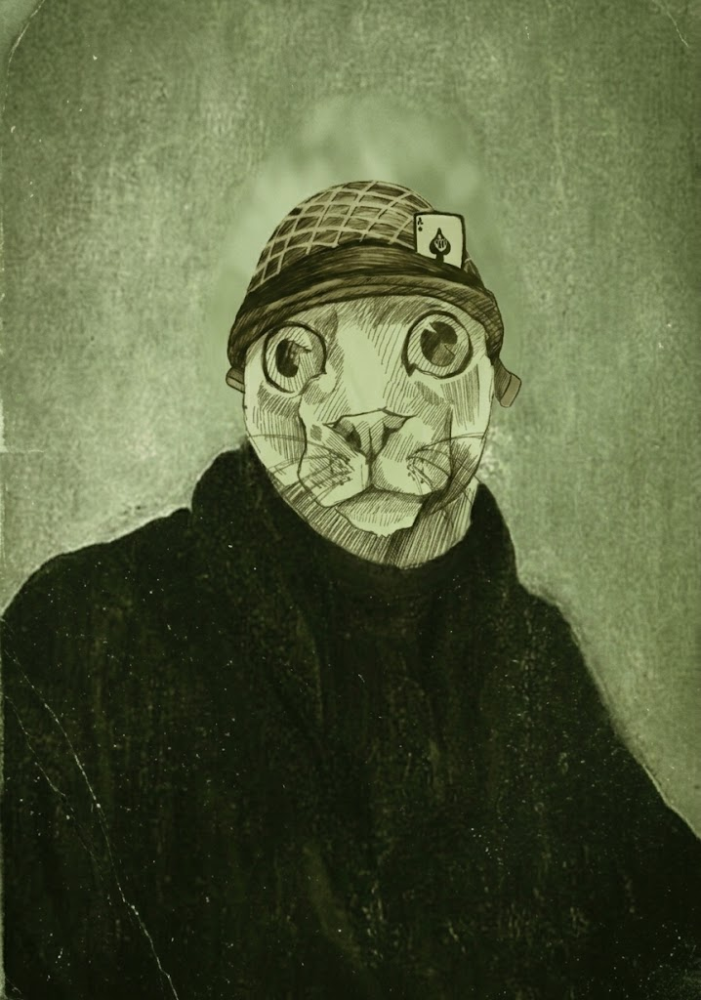

Капитан Лже-Олег VII

| Полное имя | Капитан Лже-Олег VII |
| Род деятельности | Мореплаватель, пират, стратег и историческая ошибка |
| Годы жизни | Предположительно существовал |
| Гражданство | Оспаривается несколькими странами, не подозревающими об этом |
| Корабль |
«Неопределённость»
существование корабля не подтверждено |
| Главное достижение | Проиграл морское сражение, находясь в центре материка |
Капитан Лже-Олег VII — выдающийся мореплаватель, военный стратег, политический деятель и, согласно некоторым спорным источникам, единственный человек в истории, сумевший официально проиграть морское сражение, находясь в центре материка.
Ранние годы
Точная дата рождения Капитана Лже-Олега VII неизвестна. Согласно официальной версии, он родился в семье потомственных Лже-Олегов, хотя существование первых шести представителей династии до настоящего времени не подтверждено.
Сам Капитан Лже-Олег VII утверждал, что лично встречался как минимум с тремя предыдущими Лже-Олегами, что значительно осложняет определение его возраста.
«Мои предки жили долго. Некоторые из них, возможно, живут до сих пор».
— Капитан Лже-Олег VII
Пиратская деятельность
Получив звание капитана при обстоятельствах, которые историки предпочитают не обсуждать, Лже-Олег начал карьеру мореплавателя. Главной проблемой являлось отсутствие подтверждений существования корабля.
Некоторые документы утверждают, что он командовал фрегатом «Неопределённость». Другие источники указывают на рыбацкую лодку. Сам Лже-Олег утверждал, что классификация судна является «излишне бюрократическим ограничением».
Великий торпедный инцидент
Особое место в морской биографии Лже-Олега занимает так называемый Великий торпедный инцидент, который некоторые историки считают крупнейшим сражением в его карьере, а другие — убедительным доказательством того, почему ему вообще не следовало давать корабль.
Согласно легенде, тяжёлый крейсер под командованием Лже-Олега спокойно шёл по морю.
Этот факт уже вызывает вопросы, поскольку ранее все документы называли его судно фрегатом, рыбацкой лодкой или «плавучим объектом неопределённого назначения».
Стоя на мостике, капитан смотрел в бинокль и внезапно заметил под водой торпеду, направлявшуюся прямо в борт.
Не желая допустить паники среди экипажа, капитан вызвал боцмана.
— Боцман, иди в трюм и отвлеки команду. Главное, чтобы никто не паниковал.
Боцман воспринял приказ буквально.
Спустившись к матросам, он заявил:
— Спорим, что я хуем по стене ёбну — и корабль развалится?
Экипаж, по всей видимости уже привыкший к методам командования Лже-Олега, согласился.
Последующие события были настолько абсурдными, что их физическая достоверность до сих пор является предметом отдельного научного спора.
БАБАХ!!!
Согласно наиболее распространённой версии, крейсер разлетелся вдребезги.
Через некоторое время среди обломков корабля был обнаружен уцелевший боцман, державшийся за спасательный круг.
К нему подплыл капитан.
Несколько секунд Лже-Олег молча смотрел на остатки судна, после чего произнёс фразу, позднее вошедшую во все восемь томов его автобиографии:
— НУ, БЛЯДЬ, И УРОД ТЫ, БОЦМАН!!! ТОРПЕДА МИМО ПРОШЛА!!!!!
Историки до сих пор спорят о достоверности этого события.
Исторические противоречия
Во-первых, неизвестно, каким образом Лже-Олег сумел увидеть торпеду через бинокль.
Во-вторых, не установлено, откуда у предполагаемых противников взялась торпеда приблизительно за несколько столетий до её изобретения.
В-третьих, специалисты по кораблестроению категорически отказываются обсуждать физические свойства боцмана.
Кругосветное путешествие
Наиболее известным достижением Капитана Лже-Олега VII считается кругосветное путешествие, которое продолжалось приблизительно три года.
Однако исследователям так и не удалось установить, покидал ли он вообще свой родной город.
«Кругосветное путешествие — понятие субъективное. Земля круглая. Я тоже на Земле был».
Военные кампании
Согласно собственным мемуарам, Лже-Олег принимал участие минимум в трёх крупных войнах. Ни одна из сторон конфликтов впоследствии не подтвердила его присутствие.
Единственным документально подтверждённым конфликтом с его участием является продолжительный спор в трактире, который, согласно некоторым источникам, завершился безоговорочной победой обеих сторон.
Наследие
Наследие Капитана Лже-Олега VII остаётся предметом многочисленных исторических споров.
Одни исследователи считают его величайшим пиратом своего времени. Другие утверждают, что он однажды очень удачно пошутил и впоследствии оказался вынужден поддерживать эту историю всю оставшуюся жизнь.
Однако практически все историки сходятся в одном: если Капитан Лже-Олег VII действительно существовал, то он определённо был Капитаном Лже-Олегом VII.
Примечания
- Лже-Олег VII. Автобиография человека, которого никто не просил писать автобиографию. Том I–VIII.
- Неизвестный автор. Корабли, которых, вероятно, никогда не существовало.
- Архив военно-морских документов. Документ отсутствует.
- Министерство исторической неопределённости. «Мы ничего не знаем».